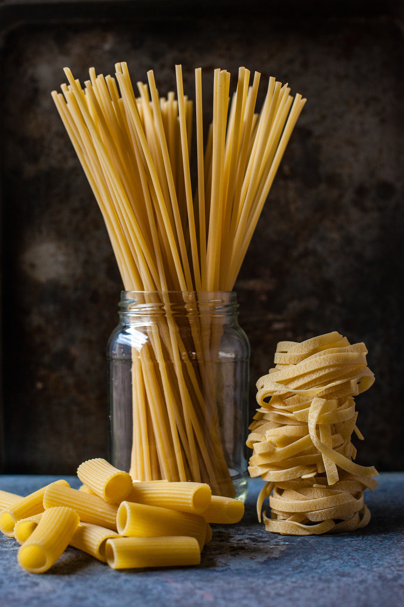

Pastas are divided into two broad categories: dried (pasta secca) and fresh (pasta fresca). Most dried pasta is produced commercially via an extrusion process, although it can be produced at home. Fresh pasta is traditionally produced by hand, sometimes with the aid of simple machines. Fresh pastas available in grocery stores are produced commercially by large-scale machines.
Both dried and fresh pastas come in a number of shapes and varieties, with 310 specific forms known by over 1300 documented names. In Italy, the names of specific pasta shapes or types often vary by locale. For example, the pasta form cavatelli is known by 28 different names depending upon the town and region. Common forms of pasta include long and short shapes, tubes, flat shapes or sheets, miniature shapes for soup, those meant to be filled or stuffed, and specialty or decorative shapes.
As a category in Italian cuisine, both fresh and dried pastas are classically used in one of three kinds of prepared dishes: as pasta asciutta (or pastasciutta), cooked pasta is plated and served with a complementary sauce or condiment; a second classification of pasta dishes is pasta in brodo, in which the pasta is part of a soup-type dish. A third category is pasta al forno, in which the pasta is incorporated into a dish that is subsequently baked in the oven. Pasta dishes are generally simple, but individual dishes vary in preparation. Some pasta dishes are served as a small first course or for light lunches, such as pasta salads. Other dishes may be portioned larger and used for dinner. Pasta sauces similarly may vary in taste, color and texture.
In terms of nutrition, cooked plain pasta is 31% carbohydrates (mostly starch), 6% protein, and low in fat, with moderate amounts of manganese, but pasta generally has low micronutrient content. Pasta may be enriched or fortified, or made from whole grains.